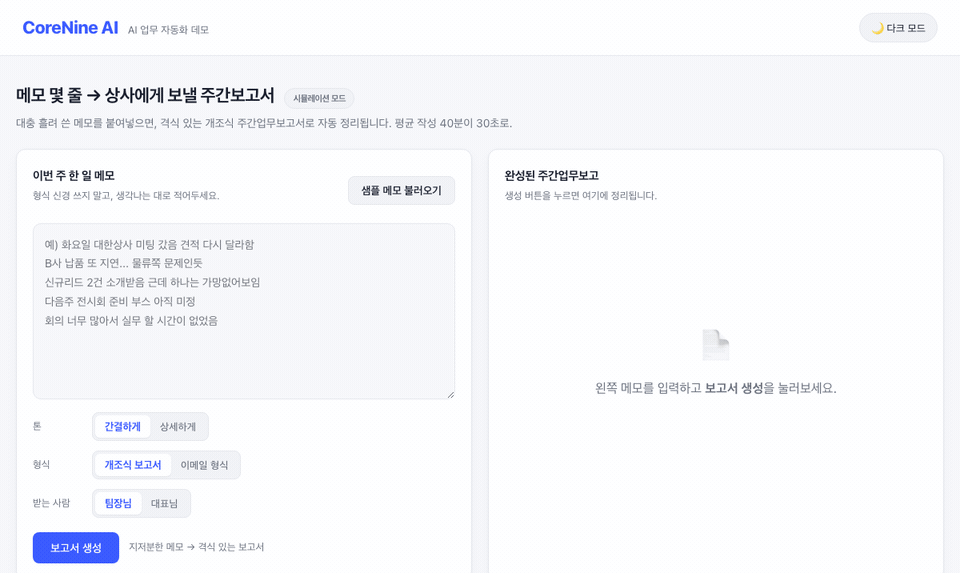
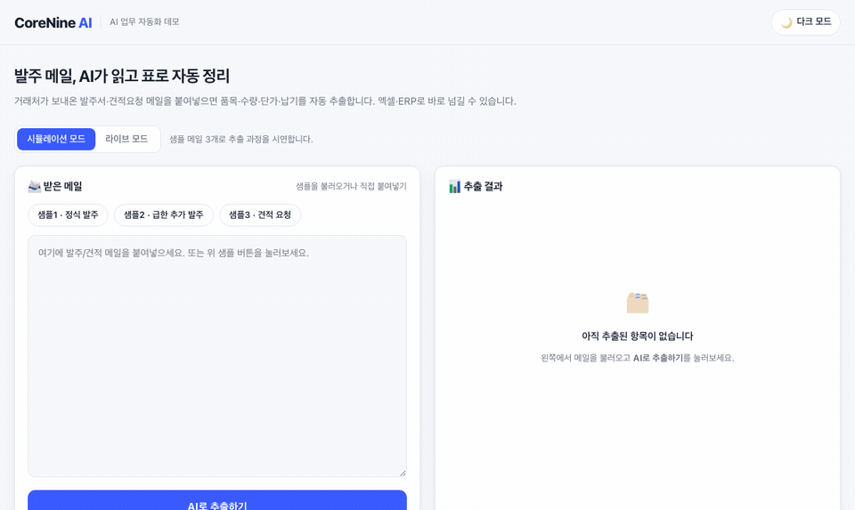
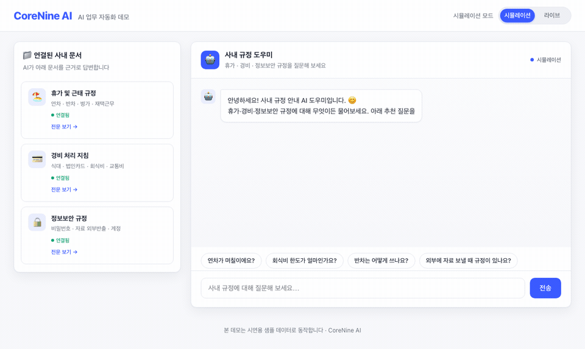

교육 다음 날 바로 활용하는 직무별 실무 커리큘럼, 그리고 반복 업무를 시스템이 대신하는 자동화 구축. 진단부터 설계·운영·성과 확인까지 한 팀이 함께합니다.
국내 기업 대부분이 AI의 필요성에 공감하지만, 실제 활용과 성과는 그 절반에도 미치지 못합니다. 글로벌 데이터가 가리키는 원인은 기술이 아니라 사람의 준비와 업무에 맞춘 설계입니다.
※ 출처: 대한상공회의소·산업연구원 실태조사 · BCG 「Where's the Value in AI?」(2024) · McKinsey Superagency 2025 · Brynjolfsson 외 「Generative AI at Work」(NBER). 결론은 하나입니다 — 직원이 제대로 배우면 성과는 따라옵니다. CoreNine AI의 모든 과정은 그 격차를 없애는 데 맞춰 설계됩니다.
직원이 직접 쓰는 힘을 기르는 것은 교육의 영역, 회사 시스템이 사람 없이 스스로 처리하게 만드는 것은 구축의 영역입니다. 두 서비스는 처음부터 분리되어 있고, 교육만 받으셔도 완결됩니다.
마케팅·기획·개발·HR·사무재무 — 직무와 난이도에 맞춘 과정. 참가자 각자가 자기 업무 결과물을 완성하고 끝나는 실습 중심 커리큘럼입니다.
공통 사무 자동화를 넘어 귀사 업(業)의 핵심 공정까지 — 발주·검수·서류·리포트가 사람 없이 돌아가는 시스템을 회사의 자산으로 만듭니다.
마케팅에는 마케팅의 AI가, 재무에는 재무의 AI가 필요합니다. 범용 특강이 아니라 직무와 난이도에 맞는 과정을 고르세요 — 모든 과정은 참가자 본인의 실제 업무로 실습합니다.
교육 실습에서 만드는 수준의 예시 프로그램입니다. 실제 도입 시에는 사내 데이터 연동·권한 관리·자동 실행이 더해진 시스템으로 구축됩니다.

지저분한 메모 몇 줄이 격식 갖춘 개조식 보고서로.
40분 → 10분
메일에서 품목·수량·단가·납기를 추출해 표로, 엑셀로.
건당 4분 → 8초
휴가·경비·보안 규정을 근거 조항과 함께 답합니다.
규정 문의 응대 부담 해소※ 위 데모는 교육·구축 결과물을 보여드리기 위한 예시 프로그램이며, 수치는 표준 실습 과제 기준입니다. 시나리오 사례 자세히 보기 →
커리큘럼을 만든 사람과 강단에 서는 사람이 같습니다. 자동화를 직접 설계·구축하는 실무자가 강의하므로, 현장 질문이 그 자리에서 해결됩니다.
범용 예제 대신 사전 진단에서 수집한 귀사의 실제 문서·데이터로 실습합니다. 그래서 교육 다음 날 바로 업무에 쓸 수 있습니다.
참가자 전원의 업무 결과물, 프롬프트 템플릿 12종, 사내 AI 사용 가이드라인, 자동화 기회 리포트 — 네 가지 산출물이 기본입니다.
교육 중 발굴된 자동화 기회를 실제 시스템 구축으로 이어갈 수 있는 기술 조직입니다. 물론 진행 여부는 전적으로 귀사가 결정합니다.
마케팅·기획·개발·HR·사무재무 — 부서별로 지금 바로 자동화할 수 있는 업무 42가지를 난이도와 함께 정리했습니다. 교육 도입 전 내부 검토 자료로 활용하세요.